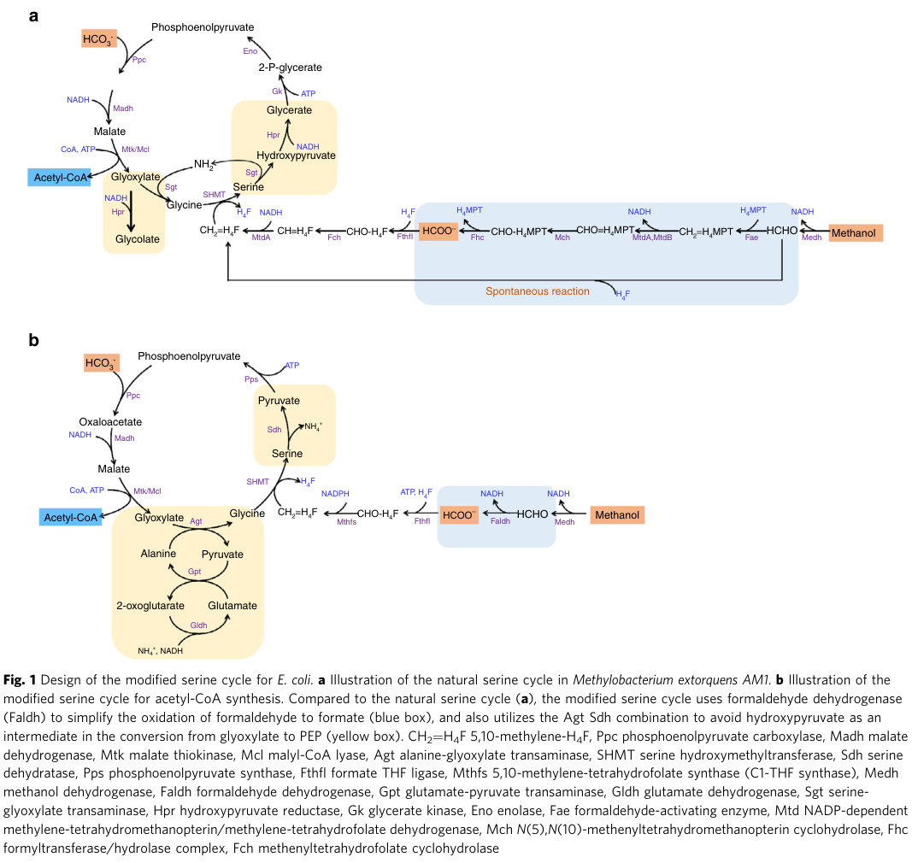

serA encodes D-3-phosphoglycerate dehydrogenase (EC 1.1.1.95), a NAD-dependent oxidoreductase of the D-isomer specific 2-hydroxyacid dehydrogenase (2HADH) family that catalyzes the reversible oxidation of 3-phospho-D-glycerate to 3-phosphonooxypyruvate, the first (committed) step of the phosphorylated (phosphoserine) L-serine biosynthesis pathway (the serA/serC/serB route). In Methylorubrum extorquens AM1, proteomics and pathway organization place serA together with serB and serC in this classical phosphoserine biosynthesis pathway, which should be distinguished from the serine cycle used for one-carbon (C1) assimilation; although both pathways converge on serine/glycine metabolism, serA itself is part of the de novo phosphoserine biosynthetic branch rather than a serine-cycle enzyme. Consistent with this, in the closely related strain M. extorquens PA1, serA is conditionally essential during growth on succinate but not on methanol, implying that the classical biosynthetic route is required when cells are not assimilating C1 units. The enzyme also carries a documented secondary (R)-2-hydroxyglutarate dehydrogenase / 2-oxoglutarate reductase activity (EC 1.1.1.399). SerA contains an N-terminal NAD(P)-binding Rossmann-fold domain for cofactor binding and a C-terminal ACT domain (residues 341-413) that in homologs mediates allosteric regulation by amino-acid effectors. No AM1-specific enzymology (kinetics, cofactor preference, allosteric regulation, knockout phenotype) has been reported, so substrate specificity and regulation are inferred from family membership and UniProt annotation.
| GO Term | Evidence | Action | Reason |
|---|---|---|---|
|
GO:0004617
phosphoglycerate dehydrogenase activity
|
IEA
GO_REF:0000120 |
ACCEPT |
Summary: This is the primary catalytic activity of SerA, converting 3-phospho-D-glycerate to 3-phosphonooxypyruvate in the first committed step of phosphorylated L-serine biosynthesis. Supported by EC 1.1.1.95 assignment, the RHEA:12641 reaction, and membership in the D-isomer specific 2-hydroxyacid dehydrogenase family. Falcon deep research independently confirms that across the M. extorquens literature serA is annotated as 3-phosphoglycerate dehydrogenase, the canonical serA function in bacteria.
Supporting Evidence:
file:METEA/serA/serA-uniprot.txt
Catalyzes the reversible oxidation of 3-phospho-D-glycerate
file:METEA/serA/serA-deep-research-falcon.md
is explicitly annotated as **3-phosphoglycerate dehydrogenase** (a canonical “serA” function in bacteria)
|
|
GO:0006564
L-serine biosynthetic process
|
IEA
GO_REF:0000117 |
ACCEPT |
Summary: SerA catalyzes step 1/3 of L-serine biosynthesis, so this annotation is correct. Falcon deep research clarifies the pathway context: in M. extorquens AM1, serA/serB/serC constitute the phosphoserine (phosphorylated) serine biosynthesis pathway, which is distinct from the serine cycle used for C1 assimilation. The L-serine biosynthetic process term is therefore accurate for SerA's biochemical role, and SerA should NOT be annotated as a serine-cycle enzyme.
Supporting Evidence:
file:METEA/serA/serA-uniprot.txt
Amino-acid biosynthesis; L-serine biosynthesis; L-serine from
file:METEA/serA/serA-deep-research-falcon.md
phosphoserine (phosphorylated) serine biosynthesis pathway** (as distinct from the **serine cycle** used for C1 assimilation)
|
|
GO:0016491
oxidoreductase activity
|
IEA
GO_REF:0000043 |
KEEP AS NON CORE |
Summary: This is a general parent term that is correct but not informative. The more specific term GO:0016616 (oxidoreductase activity, acting on the CH-OH group of donors, NAD or NADP as acceptor) better describes the enzymatic mechanism, and GO:0004617 captures the specific reaction.
|
|
GO:0016616
oxidoreductase activity, acting on the CH-OH group of donors, NAD or NADP as acceptor
|
IEA
GO_REF:0000002 |
ACCEPT |
Summary: This accurately describes the enzymatic mechanism - SerA oxidizes the hydroxyl group at C-2 of 3-phosphoglycerate using NAD+ as electron acceptor. Consistent with the D-isomer specific 2-hydroxyacid dehydrogenase chemistry, a stereospecific reversible redox transformation of 2-keto/2-hydroxy acids with NAD(P).
Supporting Evidence:
file:METEA/serA/serA-uniprot.txt
(2R)-3-phosphoglycerate + NAD(+) = 3-phosphooxypyruvate + NADH
file:METEA/serA/serA-deep-research-falcon.md
NAD(P)-dependent redox reaction on a 2-keto/2-hydroxyacid substrate pair
|
|
GO:0051287
NAD binding
|
IEA
GO_REF:0000002 |
ACCEPT |
Summary: SerA requires NAD+ as a cofactor for its dehydrogenase activity and contains a NAD(P)-binding Rossmann-fold domain. This is a valid supporting molecular function. Supported by InterPro IPR006139/IPR006140 and the SUPFAM Rossmann-fold assignment in UniProt.
Supporting Evidence:
file:METEA/serA/serA-uniprot.txt
NAD(P)-binding Rossmann-fold domains
|
The research report should be a detailed narrative explaining the function, biological processes, and localization of the gene product. Citations should be given for all claims.
You should prioritize authoritative reviews and primary scientific literature when conducting research. You can supplement
this with annotations you find in gene/protein databases, but these can be outdated or inaccurate.
We are specifically interested in the primary function of the gene - for enzymes, what reaction is catalyzed, and what is the substrate specificity? For transporters, what is the substrate? For structural proteins or adapters, what is the broader structural role? For signaling molecules, what is the role in the pathway.
We are interested in where in or outside the cell the gene product carries out its function.
We are also interested in the signaling or biochemical pathways in which the gene functions. We are less interested in broad pleiotropic effects, except where these elucidate the precise role.
Include evidence where possible. We are interested in both experimental evidence as well as inference from structure, evolution, or bioinformatic analysis. Precise studies should be prioritized over high-throughput, where available.
The UniProt target C5APD6 (serA) corresponds (in the Methylorubrum/Methylobacterium extorquens lineage) to 3-phosphoglycerate dehydrogenase (SerA), a member of the D-isomer-specific 2-hydroxyacid dehydrogenase (2HADH) superfamily that catalyzes an NAD(P)-dependent redox reaction on a 2-keto/2-hydroxyacid substrate pair (general 2HADH chemistry) (matelska2018classificationsubstratespecificity pages 1-2, matelska2018classificationsubstratespecificity pages 7-8). In M. extorquens AM1, proteomics places serA/serB/serC in the phosphoserine (phosphorylated) serine biosynthesis pathway (as distinct from the serine cycle used for C1 assimilation) (schneider2012theethylmalonylcoapathway pages 4-4). In a closely related model strain (M. extorquens PA1), transposon sequencing indicates serA is conditionally essential on succinate (but not on methanol), consistent with a shift in how serine is supplied/used across growth substrates in methylotrophs (ochsner2017transposonsequencinguncovers pages 4-5).
Important limitation: In the retrieved full-text evidence for this run, no primary biochemical study directly measuring AM1 SerA kinetics, cofactor preference, or substrate range was found; therefore organism-specific catalytic parameters and regulation cannot be asserted beyond the pathway-level and essentiality/proteomics evidence cited above.
Across Methylobacterium/Methylorubrum extorquens literature retrieved here, serA is explicitly annotated as 3-phosphoglycerate dehydrogenase (a canonical “serA” function in bacteria) (ochsner2017transposonsequencinguncovers pages 4-5). In AM1 proteomics, serA is listed as “Phosphoglycerate dehydrogenase (serA)” along with serB and serC in the “phosphoserine pathway” (schneider2012theethylmalonylcoapathway pages 4-4). This aligns with the UniProt-provided identity.
The evidence includes Methylobacterium extorquens AM1 (proteomics/flux) (schneider2012theethylmalonylcoapathway pages 4-4) and closely related M. extorquens PA1 (TnSeq essentiality) (ochsner2017transposonsequencinguncovers pages 4-5). These are within the same model methylotroph lineage that has undergone taxonomic updates to Methylorubrum.
The UniProt entry indicates a relationship to D-isomer-specific 2-hydroxyacid dehydrogenases. A family-level phylogenetic/structural analysis of 2HADHs describes their conserved catalytic features and the general redox chemistry on 2-keto/2-hydroxyacid pairs (matelska2018classificationsubstratespecificity pages 1-2, matelska2018classificationsubstratespecificity pages 7-8). This supports plausibility of SerA’s oxidoreductase mechanism class, although it does not substitute for organism-specific enzymology.
1) Phosphoserine (phosphorylated) serine biosynthesis pathway (often called the “classical serA/serC/serB route”)
- Evidence in AM1: serA, serB, serC are grouped as the “phosphoserine pathway” in proteomics tables (schneider2012theethylmalonylcoapathway pages 4-4).
- Evidence in PA1: serA and serB are described as enzymes involved in serine biosynthesis and are conditionally essential depending on substrate (succinate vs methanol) (ochsner2017transposonsequencinguncovers pages 4-5).
2) Serine cycle (C1 assimilation pathway)
- The serine cycle is central to methylotrophic assimilation in M. extorquens and related type II methylotrophs, and is commonly depicted as a pathway converting C1 units plus CO2 into central metabolites/acetyl-CoA precursors (yu2018amodifiedserine pages 1-3, yu2018amodifiedserine media 92073d66).
- In AM1, multiple serine-cycle enzymes (e.g., sga, hpr, ppc, mtk) show strong growth-condition dependence (acetate vs methanol) in proteomics, illustrating that the cycle’s operation is regulated by carbon source (schneider2012theethylmalonylcoapathway pages 4-4).
2HADHs catalyze a stereospecific reversible redox transformation of 2-keto acids to 2-hydroxy acids with NAD(P)H/NAD(P)+, and the family exhibits diversified substrate specificity, complicating annotation (matelska2018classificationsubstratespecificity pages 1-2). Structural analyses emphasize conserved active-site residues and that substrate binding and catalysis involve a conserved “catalytic triad” (Arg/Glu/His) architecture in canonical 2HADHs (matelska2018classificationsubstratespecificity pages 7-8).
serA participates in the phosphoserine pathway for serine biosynthesis, as shown by explicit grouping of serA/serB/serC under “Glycine cleavage system and phosphoserine pathway” in AM1 proteomics (schneider2012theethylmalonylcoapathway pages 4-4). This provides direct pathway-context evidence in the target organism background.
A saturated TnSeq essentiality screen in M. extorquens PA1 reports that serA (3-phosphoglycerate dehydrogenase; Mext_0213) and serB (phosphoserine phosphatase; Mext_2655) are essential only during growth on succinate (not on methanol) (ochsner2017transposonsequencinguncovers pages 4-5). The authors interpret this as reflecting the need for the “classical” serine biosynthesis pathway on succinate, contrasting with a different handling/biosynthesis of serine during growth on methanol (ochsner2017transposonsequencinguncovers pages 4-5).
This constitutes strong experimental evidence that serA-linked serine biosynthesis can be carbon-source dependent in this lineage (ochsner2017transposonsequencinguncovers pages 4-5).
In AM1 (acetate vs methanol), quantitative proteomics reports for the phosphoserine branch:
- serC fold change 0.4, p = 0.01 (acetate vs methanol), indicating lower SerC abundance on acetate (schneider2012theethylmalonylcoapathway pages 4-4).
- serA fold change 0.6, p = 0.38 (not significant in this dataset) (schneider2012theethylmalonylcoapathway pages 4-4).
- serB fold change 1.3, p = 0.35 (not significant in this dataset) (schneider2012theethylmalonylcoapathway pages 4-4).
Concurrently, several serine-cycle enzymes are strongly decreased on acetate relative to methanol (e.g., sga 0.1, hpr 0.2, ppc 0.1, mtkA/B 0.1/0.1, all with p = 0.01) (schneider2012theethylmalonylcoapathway pages 4-4). This supports the concept that methylotrophic growth induces serine-cycle machinery (schneider2012theethylmalonylcoapathway pages 4-4).
The UniProt entry provided by the user assigns EC numbers consistent with phosphoglycerate dehydrogenase activity and an alternate 2-oxoglutarate reductase annotation; however, no organism-specific biochemical characterization of AM1 SerA was retrieved in this run to directly substantiate:
- precise physiological substrate(s) and promiscuity,
- cofactor specificity (NADH vs NADPH),
- kinetic constants,
- allosteric regulation via ACT-like domains.
Therefore, these details remain inferred rather than demonstrated here, and should be treated as hypotheses until AM1-specific enzymology is obtained.
The retrieved organism-specific sources in this run do not directly state SerA subcellular localization. Many methylotrophy functions (e.g., methanol dehydrogenase) are explicitly periplasmic in Methylorubrum/Methylobacterium (zhang2024phosphoribosylpyrophosphatesynthetaseas pages 1-2), but SerA is not discussed for localization in the extracted evidence. Thus, localization of SerA must be considered undetermined from the present cited corpus.
A widely cited schematic of the natural serine cycle in M. extorquens AM1 is provided in Yu & Liao (2018) (Figure 1a), showing how C1 units (carried by folate chemistry) and CO2 are integrated into central metabolites (yu2018amodifiedserine pages 1-3, yu2018amodifiedserine media 92073d66). This figure is helpful for distinguishing the serine cycle from the phosphoserine biosynthesis branch that includes serA/serB/serC.
Together, these data support a substrate-dependent reorganization of serine metabolism in the M. extorquens lineage.
A 2024 study evolved and engineered Methylorubrum extorquens AM1-derived strains to improve growth under low methanol, explicitly framing trade-offs between catabolism and anabolism in phyllosphere-relevant conditions (Zhang et al., received Nov 2, 2023; accepted Jul 6, 2024; published Jul 2024) (zhang2024phosphoribosylpyrophosphatesynthetaseas pages 1-2). This paper also provides an ecological statistic frequently used in expert framing: global methanol emissions are estimated at ~100 Tg annually (zhang2024phosphoribosylpyrophosphatesynthetaseas pages 1-2).
Although this work centers on methanol assimilation and pathway valves rather than serA, it reinforces the modern view that central-carbon allocation during methylotrophy is an engineering and ecological bottleneck (zhang2024phosphoribosylpyrophosphatesynthetaseas pages 1-2).
A 2024 pangenomic analysis of 75 type II methylotrophs reports that genes associated with serine pathway metabolism are broadly conserved across the group, and highlights diversity in specific enzymes/isozymes (published May 2, 2024) (samanta2024fromgenometo pages 1-2). This supports the idea that serine-linked carbon assimilation and its supporting biosynthetic pathways remain central traits at the clade level.
A 2024 synthetic biology paper emphasizes M. extorquens AM1 as “a platform organism used to convert C1 compounds into various value-added products,” and demonstrates chromosomal integration tools to increase heterologous gene dosage (Zhu et al., published Jan 2024; article licensed 2023) (zhu2024heterologousproductionof pages 1-2). While not focused on serA, it provides a current implementation context in which serine-related carbon and nitrogen balancing could become engineering levers.
Reported quantitative production data include 3-hydroxypropionic acid (3-HP) titers of 34.7–55.2 mg/L (two chromosomal integration copies) and 65.5–92.4 mg/L (with additional plasmid-based expression) (zhu2024heterologousproductionof pages 1-2).
Modern applied work positions Methylorubrum extorquens AM1 as a chassis for converting C1 feedstocks into value-added products (zhu2024heterologousproductionof pages 1-2). In such implementations, serine metabolism intersects with:
- C1 assimilation through the serine cycle (central carbon entry) (yu2018amodifiedserine pages 1-3, yu2018amodifiedserine media 92073d66).
- Biomass building block provision, where phosphoserine pathway flux (serA/serC/serB) may become conditionally important depending on growth substrate and metabolic rewiring (succinate essentiality in PA1) (ochsner2017transposonsequencinguncovers pages 4-5).
The 2024 Nature Communications study frames methylotrophy as critical for phyllosphere colonization and notes plant-derived methanol fluctuates diurnally from trace amounts to tens of millimoles, motivating selection for traits improving methanol assimilation (zhang2024phosphoribosylpyrophosphatesynthetaseas pages 1-2). Serine cycle activity (and by extension serine-related metabolic balancing) is part of this adaptive landscape.
The following figure provides a compact, peer-reviewed schematic of the natural serine cycle in M. extorquens AM1 (panel a) used as a reference in synthetic biology design.
(yu2018amodifiedserine media 92073d66)
What is well supported from the retrieved evidence:
- serA/serB/serC belong to the phosphoserine pathway in AM1 proteomic pathway organization (schneider2012theethylmalonylcoapathway pages 4-4).
- serA is conditionally essential (succinate-only) in a closely related model strain PA1, implying substrate-dependent serine provisioning (ochsner2017transposonsequencinguncovers pages 4-5).
- serine-cycle enzyme abundance is strongly growth-substrate dependent in AM1, consistent with the serine cycle being particularly important during C1 growth (schneider2012theethylmalonylcoapathway pages 4-4).
What remains unresolved for AM1 SerA (C5APD6) in this run:
- direct SerA enzymology (substrate range, kinetic parameters, cofactor preference),
- allosteric regulation via ACT-like domains,
- subcellular localization,
- direct AM1 serA knockout phenotypes.
Filling these gaps would require retrieving (or experimentally generating) AM1-specific SerA biochemical characterization and/or targeted genetics beyond the scope of the present evidence set.
References
(matelska2018classificationsubstratespecificity pages 1-2): Dorota Matelska, Ivan G. Shabalin, Jagoda Jabłońska, Marcin J. Domagalski, Jan Kutner, Krzysztof Ginalski, and Wladek Minor. Classification, substrate specificity and structural features of d-2-hydroxyacid dehydrogenases: 2hadh knowledgebase. BMC Evolutionary Biology, Dec 2018. URL: https://doi.org/10.1186/s12862-018-1309-8, doi:10.1186/s12862-018-1309-8. This article has 41 citations and is from a domain leading peer-reviewed journal.
(matelska2018classificationsubstratespecificity pages 7-8): Dorota Matelska, Ivan G. Shabalin, Jagoda Jabłońska, Marcin J. Domagalski, Jan Kutner, Krzysztof Ginalski, and Wladek Minor. Classification, substrate specificity and structural features of d-2-hydroxyacid dehydrogenases: 2hadh knowledgebase. BMC Evolutionary Biology, Dec 2018. URL: https://doi.org/10.1186/s12862-018-1309-8, doi:10.1186/s12862-018-1309-8. This article has 41 citations and is from a domain leading peer-reviewed journal.
(schneider2012theethylmalonylcoapathway pages 4-4): Kathrin Schneider, Rémi Peyraud, Patrick Kiefer, Philipp Christen, Nathanaël Delmotte, Stéphane Massou, Jean-Charles Portais, and Julia A. Vorholt. The ethylmalonyl-coa pathway is used in place of the glyoxylate cycle by methylobacterium extorquens am1 during growth on acetate. Journal of Biological Chemistry, 287:757-766, Jan 2012. URL: https://doi.org/10.1074/jbc.m111.305219, doi:10.1074/jbc.m111.305219. This article has 106 citations and is from a domain leading peer-reviewed journal.
(ochsner2017transposonsequencinguncovers pages 4-5): Andrea M. Ochsner, Matthias Christen, Lucas Hemmerle, Rémi Peyraud, Beat Christen, and Julia A. Vorholt. Transposon sequencing uncovers an essential regulatory function of phosphoribulokinase for methylotrophy. Current Biology, 27:2579-2588.e6, Sep 2017. URL: https://doi.org/10.1016/j.cub.2017.07.025, doi:10.1016/j.cub.2017.07.025. This article has 58 citations and is from a highest quality peer-reviewed journal.
(yu2018amodifiedserine pages 1-3): Hong Yu and James C. Liao. A modified serine cycle in escherichia coli coverts methanol and co2 to two-carbon compounds. Nature Communications, Sep 2018. URL: https://doi.org/10.1038/s41467-018-06496-4, doi:10.1038/s41467-018-06496-4. This article has 227 citations and is from a highest quality peer-reviewed journal.
(yu2018amodifiedserine media 92073d66): Hong Yu and James C. Liao. A modified serine cycle in escherichia coli coverts methanol and co2 to two-carbon compounds. Nature Communications, Sep 2018. URL: https://doi.org/10.1038/s41467-018-06496-4, doi:10.1038/s41467-018-06496-4. This article has 227 citations and is from a highest quality peer-reviewed journal.
(zhang2024phosphoribosylpyrophosphatesynthetaseas pages 1-2): Cong Zhang, Di-Fei Zhou, Meng-Ying Wang, Ya-Zhen Song, Chong Zhang, Ming-Ming Zhang, Jing Sun, Lu Yao, Xu-Hua Mo, Zeng-Xin Ma, Xiao-Jie Yuan, Yi Shao, Hao-Ran Wang, Si-Han Dong, Kai Bao, Shu-Huan Lu, Martin Sadilek, Marina G. Kalyuzhnaya, Xin-Hui Xing, and Song Yang. Phosphoribosylpyrophosphate synthetase as a metabolic valve advances methylobacterium/methylorubrum phyllosphere colonization and plant growth. Nature Communications, Jul 2024. URL: https://doi.org/10.1038/s41467-024-50342-9, doi:10.1038/s41467-024-50342-9. This article has 30 citations and is from a highest quality peer-reviewed journal.
(samanta2024fromgenometo pages 1-2): Dipayan Samanta, Shailabh Rauniyar, Priya Saxena, and Rajesh K. Sani. From genome to evolution: investigating type ii methylotrophs using a pangenomic analysis. Jun 2024. URL: https://doi.org/10.1128/msystems.00248-24, doi:10.1128/msystems.00248-24. This article has 9 citations and is from a peer-reviewed journal.
(zhu2024heterologousproductionof pages 1-2): Liping Zhu, Yazhen Song, Shunan Ma, and Song Yang. Heterologous production of 3-hydroxypropionic acid in methylorubrum extorquens by introducing the mcr gene via a multi-round chromosomal integration system based on cre-lox71/lox66 and transposon. Microbial Cell Factories, Jan 2024. URL: https://doi.org/10.1186/s12934-023-02275-z, doi:10.1186/s12934-023-02275-z. This article has 8 citations and is from a peer-reviewed journal.
(ochsner2017transposonsequencinguncovers pages 3-4): Andrea M. Ochsner, Matthias Christen, Lucas Hemmerle, Rémi Peyraud, Beat Christen, and Julia A. Vorholt. Transposon sequencing uncovers an essential regulatory function of phosphoribulokinase for methylotrophy. Current Biology, 27:2579-2588.e6, Sep 2017. URL: https://doi.org/10.1016/j.cub.2017.07.025, doi:10.1016/j.cub.2017.07.025. This article has 58 citations and is from a highest quality peer-reviewed journal.

id: C5APD6
gene_symbol: serA
product_type: PROTEIN
taxon:
id: NCBITaxon:272630
label: Methylorubrum extorquens AM1
description: 'serA encodes D-3-phosphoglycerate dehydrogenase (EC 1.1.1.95), a NAD-dependent
oxidoreductase of the D-isomer specific 2-hydroxyacid dehydrogenase (2HADH) family
that catalyzes the reversible oxidation of 3-phospho-D-glycerate to 3-phosphonooxypyruvate,
the first (committed) step of the phosphorylated (phosphoserine) L-serine biosynthesis
pathway (the serA/serC/serB route). In Methylorubrum extorquens AM1, proteomics and
pathway organization place serA together with serB and serC in this classical phosphoserine
biosynthesis pathway, which should be distinguished from the serine cycle used for
one-carbon (C1) assimilation; although both pathways converge on serine/glycine metabolism,
serA itself is part of the de novo phosphoserine biosynthetic branch rather than a
serine-cycle enzyme. Consistent with this, in the closely related strain M. extorquens
PA1, serA is conditionally essential during growth on succinate but not on methanol,
implying that the classical biosynthetic route is required when cells are not assimilating
C1 units. The enzyme also carries a documented secondary (R)-2-hydroxyglutarate dehydrogenase
/ 2-oxoglutarate reductase activity (EC 1.1.1.399). SerA contains an N-terminal NAD(P)-binding
Rossmann-fold domain for cofactor binding and a C-terminal ACT domain (residues 341-413)
that in homologs mediates allosteric regulation by amino-acid effectors. No AM1-specific
enzymology (kinetics, cofactor preference, allosteric regulation, knockout phenotype)
has been reported, so substrate specificity and regulation are inferred from family
membership and UniProt annotation.'
existing_annotations:
- term:
id: GO:0004617
label: phosphoglycerate dehydrogenase activity
evidence_type: IEA
original_reference_id: GO_REF:0000120
review:
summary: This is the primary catalytic activity of SerA, converting 3-phospho-D-glycerate
to 3-phosphonooxypyruvate in the first committed step of phosphorylated L-serine
biosynthesis. Supported by EC 1.1.1.95 assignment, the RHEA:12641 reaction, and
membership in the D-isomer specific 2-hydroxyacid dehydrogenase family. Falcon
deep research independently confirms that across the M. extorquens literature
serA is annotated as 3-phosphoglycerate dehydrogenase, the canonical serA function
in bacteria.
action: ACCEPT
supported_by:
- reference_id: file:METEA/serA/serA-uniprot.txt
supporting_text: Catalyzes the reversible oxidation of 3-phospho-D-glycerate
- reference_id: file:METEA/serA/serA-deep-research-falcon.md
supporting_text: is explicitly annotated as **3-phosphoglycerate dehydrogenase** (a
canonical “serA” function in bacteria)
- term:
id: GO:0006564
label: L-serine biosynthetic process
evidence_type: IEA
original_reference_id: GO_REF:0000117
review:
summary: 'SerA catalyzes step 1/3 of L-serine biosynthesis, so this annotation
is correct. Falcon deep research clarifies the pathway context: in M. extorquens
AM1, serA/serB/serC constitute the phosphoserine (phosphorylated) serine biosynthesis
pathway, which is distinct from the serine cycle used for C1 assimilation. The
L-serine biosynthetic process term is therefore accurate for SerA''s biochemical
role, and SerA should NOT be annotated as a serine-cycle enzyme.'
action: ACCEPT
supported_by:
- reference_id: file:METEA/serA/serA-uniprot.txt
supporting_text: 'Amino-acid biosynthesis; L-serine biosynthesis; L-serine from'
- reference_id: file:METEA/serA/serA-deep-research-falcon.md
supporting_text: phosphoserine (phosphorylated) serine biosynthesis pathway**
(as distinct from the **serine cycle** used for C1 assimilation)
- term:
id: GO:0016491
label: oxidoreductase activity
evidence_type: IEA
original_reference_id: GO_REF:0000043
review:
summary: This is a general parent term that is correct but not informative. The
more specific term GO:0016616 (oxidoreductase activity, acting on the CH-OH
group of donors, NAD or NADP as acceptor) better describes the enzymatic mechanism,
and GO:0004617 captures the specific reaction.
action: KEEP_AS_NON_CORE
- term:
id: GO:0016616
label: oxidoreductase activity, acting on the CH-OH group of donors, NAD or NADP
as acceptor
evidence_type: IEA
original_reference_id: GO_REF:0000002
review:
summary: This accurately describes the enzymatic mechanism - SerA oxidizes the
hydroxyl group at C-2 of 3-phosphoglycerate using NAD+ as electron acceptor.
Consistent with the D-isomer specific 2-hydroxyacid dehydrogenase chemistry,
a stereospecific reversible redox transformation of 2-keto/2-hydroxy acids with
NAD(P).
action: ACCEPT
supported_by:
- reference_id: file:METEA/serA/serA-uniprot.txt
supporting_text: (2R)-3-phosphoglycerate + NAD(+) = 3-phosphooxypyruvate + NADH
- reference_id: file:METEA/serA/serA-deep-research-falcon.md
supporting_text: NAD(P)-dependent redox reaction on a 2-keto/2-hydroxyacid substrate
pair
- term:
id: GO:0051287
label: NAD binding
evidence_type: IEA
original_reference_id: GO_REF:0000002
review:
summary: SerA requires NAD+ as a cofactor for its dehydrogenase activity and contains
a NAD(P)-binding Rossmann-fold domain. This is a valid supporting molecular
function. Supported by InterPro IPR006139/IPR006140 and the SUPFAM Rossmann-fold
assignment in UniProt.
action: ACCEPT
supported_by:
- reference_id: file:METEA/serA/serA-uniprot.txt
supporting_text: NAD(P)-binding Rossmann-fold domains
core_functions:
- description: 'SerA catalyzes the NAD-dependent reversible oxidation of D-3-phosphoglycerate
to 3-phosphonooxypyruvate, the first committed step of the phosphorylated (phosphoserine)
L-serine biosynthesis pathway (serA/serC/serB). In Methylorubrum extorquens AM1
this de novo serine biosynthesis branch is distinct from the serine cycle of C1
assimilation, so serA is a phosphoserine-pathway enzyme rather than a serine-cycle
enzyme. The enzyme is a member of the D-isomer specific 2-hydroxyacid dehydrogenase
family, uses a NAD(P)-binding Rossmann-fold domain for cofactor binding, and carries
a C-terminal ACT domain implicated in allosteric regulation in homologs. SerA also
has a documented secondary (R)-2-hydroxyglutarate dehydrogenase / 2-oxoglutarate
reductase activity (EC 1.1.1.399). Pathway context is carbon-source dependent in
this lineage; in the closely related strain PA1, serA is essential only during
growth on succinate, consistent with the classical biosynthetic route being needed
when serine is not supplied via C1 metabolism. AM1-specific kinetics, cofactor
preference, and allosteric regulation have not been directly measured and remain
inferred.'
molecular_function:
id: GO:0004617
label: phosphoglycerate dehydrogenase activity
directly_involved_in:
- id: GO:0006564
label: L-serine biosynthetic process
supported_by:
- reference_id: file:METEA/serA/serA-uniprot.txt
supporting_text: Catalyzes the reversible oxidation of 3-phospho-D-glycerate
- reference_id: file:METEA/serA/serA-deep-research-falcon.md
supporting_text: serA, serB, serC are grouped as the **“phosphoserine pathway”**
- reference_id: file:METEA/serA/serA-deep-research-falcon.md
supporting_text: essential only during growth on succinate
references:
- id: file:METEA/serA/serA-uniprot.txt
title: UniProt entry for serA D-3-phosphoglycerate dehydrogenase
findings: []
- id: file:METEA/serA/serA-deep-research-falcon.md
title: Falcon deep research report for serA (C5APD6) in Methylorubrum extorquens AM1
findings:
- reference_section_type: OTHER
supporting_text: is explicitly annotated as **3-phosphoglycerate dehydrogenase**
(a canonical “serA” function in bacteria)
- reference_section_type: OTHER
supporting_text: serA, serB, serC are grouped as the **“phosphoserine pathway”**
- reference_section_type: OTHER
supporting_text: phosphoserine (phosphorylated) serine biosynthesis pathway**
(as distinct from the **serine cycle** used for C1 assimilation)
- reference_section_type: OTHER
supporting_text: serA is conditionally essential on succinate
- reference_section_type: OTHER
supporting_text: essential only during growth on succinate
- reference_section_type: OTHER
supporting_text: reflecting the need for the “classical” serine biosynthesis pathway
on succinate
- reference_section_type: OTHER
supporting_text: NAD(P)-dependent redox reaction on a 2-keto/2-hydroxyacid substrate
pair
- reference_section_type: OTHER
supporting_text: no organism-specific biochemical characterization of AM1 SerA
- reference_section_type: OTHER
supporting_text: allosteric regulation via ACT-like domains
- reference_section_type: OTHER
supporting_text: localization of SerA must be considered
- id: GO_REF:0000002
title: Gene Ontology annotation through association of InterPro records with GO
terms.
findings: []
- id: GO_REF:0000043
title: Gene Ontology annotation based on UniProtKB/Swiss-Prot keyword mapping
findings: []
- id: GO_REF:0000117
title: Electronic Gene Ontology annotations created by ARBA machine learning models
findings: []
- id: GO_REF:0000120
title: Combined Automated Annotation using Multiple IEA Methods.
findings: []
status: COMPLETE
{kind=link}